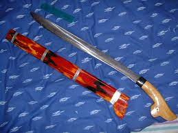
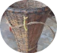
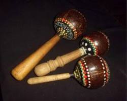

Parang
Merupakan senjata tradisional khas daerah Maluku Utara biasanya dipakai oleh para penari pria saat mempertunjukan tarian cakelele dan di masa lalu digunakan sebagai senjata saat masa perang kerajaan

Saloi
Saloi adalah tas keranjang tradisional yang berasal dari Pulau Halmahera, Maluku Utara. Tas ini berbentuk keranjang yang dapat digendong di punggung yang biasanya digunakan oleh perempuan untuk membawa beraneka ragam kebutuhan dan hasil bumi.

Kerajinan Besi Putih
Kerajinan Besi Putih sudah menjadi khas daerah Maluku Utara,menurut warga setempat kerajinan besi putih memiliki keunggulan dibandingkan kerajinan logam lainnya seperti anti karat dan lebih awet